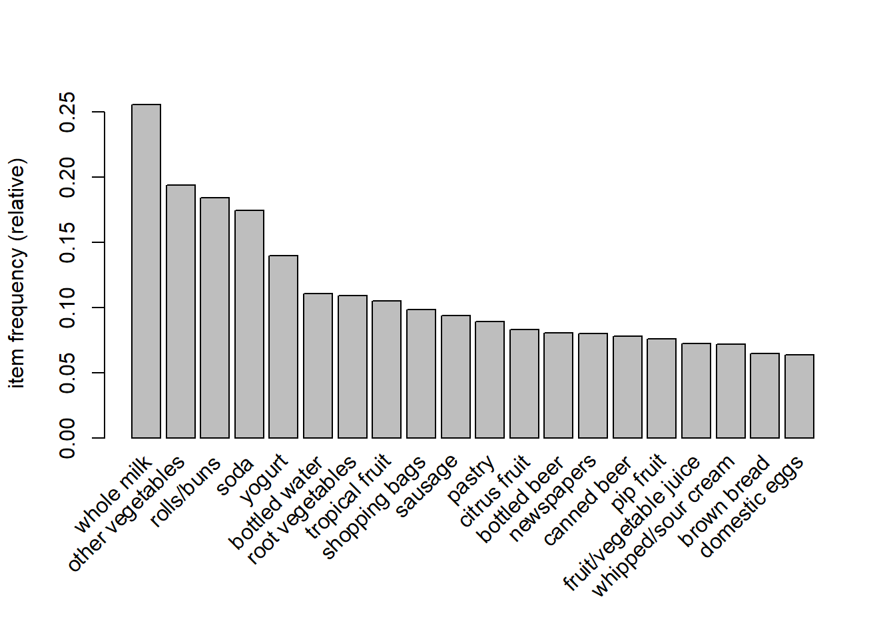
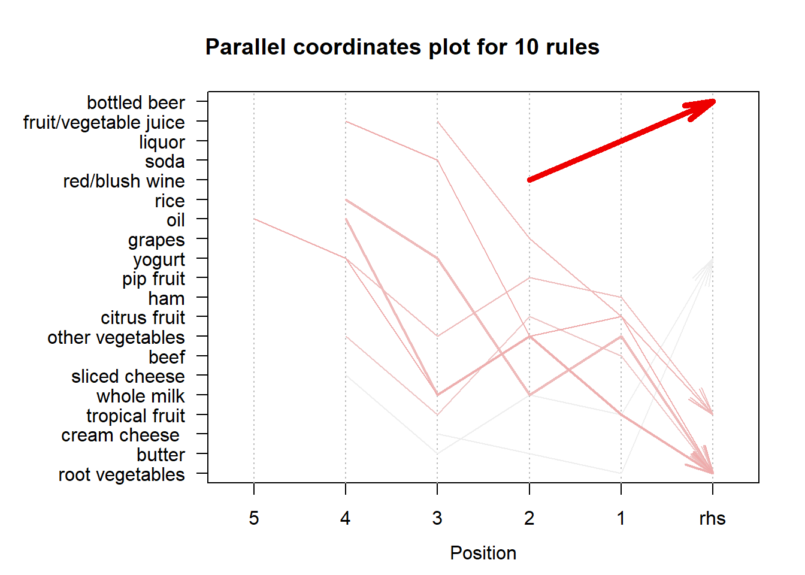

AP3 - Association Rules
Rafael Lourenço
2024-01-07
Association Rule Mining
Association rule mining is an unsupervised machine learning technique
that uses the APRIORI algorithm to uncover relationships in datasets,
commonly applied in market basket analysis.
This approach helps identify associations between items in transactions,
often seen in recommendations like “Customers Also Bought.”
Sources
Dependencies
library(arules)
library(arulesViz)
library(datasets)Dataset
The Groceries dataset comprises 30 days of real-world point-of-sale transactions from a local grocery outlet, with 9835 transactions and items grouped into 169 categories.
data("Groceries")
summary(Groceries)## transactions as itemMatrix in sparse format with
## 9835 rows (elements/itemsets/transactions) and
## 169 columns (items) and a density of 0.02609146
##
## most frequent items:
## whole milk other vegetables rolls/buns soda
## 2513 1903 1809 1715
## yogurt (Other)
## 1372 34055
##
## element (itemset/transaction) length distribution:
## sizes
## 1 2 3 4 5 6 7 8 9 10 11 12 13 14 15 16
## 2159 1643 1299 1005 855 645 545 438 350 246 182 117 78 77 55 46
## 17 18 19 20 21 22 23 24 26 27 28 29 32
## 29 14 14 9 11 4 6 1 1 1 1 3 1
##
## Min. 1st Qu. Median Mean 3rd Qu. Max.
## 1.000 2.000 3.000 4.409 6.000 32.000
##
## includes extended item information - examples:
## labels level2 level1
## 1 frankfurter sausage meat and sausage
## 2 sausage sausage meat and sausage
## 3 liver loaf sausage meat and sausageWith itemFrequencyPlot() function we can create an item
frequency bar and view the most frequent items, in this case the top 20
items.
itemFrequencyPlot(Groceries, topN=20) 
We can use inspect() function to display associations
and transactions in a readable format.
In this case, the first three transactions.
inspect(head(Groceries, 3))## items
## [1] {citrus fruit,
## semi-finished bread,
## margarine,
## ready soups}
## [2] {tropical fruit,
## yogurt,
## coffee}
## [3] {whole milk}This dataset is already in a usable state for the APRIORI algorithm, so no data preprocessing is required.
Apriori Algorithm
Basic Concepts
The APRIORI algorithm involves three key metrics: Support, Confidence, and Lift, influencing the generation of association rules.

Support is a metric showing how often an item or item-set occurs.
Confidence is a Mathematical confidence that another item is bought given the presence of a certain item..
Lift is a correlation between two items, indicating how their occurrence together surpasses random probability.
Lift>1 insinuates that the items appear together more often than they would randomly (positive relationship)
Lift<1 insinuates that the items appear together less often than they would randomly (negative relationship)
Lift=1 insinuates that the items appear together as often as they would randomly (no relationship)
Generating Rules
Let’s generate some initial rules, using a minimum of 0.001
support and 0.8 confidence thresholds. Also use
minlen and maxlen to specify the threshold of items
per rule.
These parameters can be adjusted to get different number of rules. If we
want stronger rules, we increase the value of conf, for rules
with higher frequency we increase the value of supp, and for
more extended rules give higher value to maxlen.
initial_rules <- apriori(Groceries,
parameter = list(supp=0.001, conf=0.8, minlen=2, maxlen=10))## Apriori
##
## Parameter specification:
## confidence minval smax arem aval originalSupport maxtime support minlen
## 0.8 0.1 1 none FALSE TRUE 5 0.001 2
## maxlen target ext
## 10 rules TRUE
##
## Algorithmic control:
## filter tree heap memopt load sort verbose
## 0.1 TRUE TRUE FALSE TRUE 2 TRUE
##
## Absolute minimum support count: 9
##
## set item appearances ...[0 item(s)] done [0.00s].
## set transactions ...[169 item(s), 9835 transaction(s)] done [0.00s].
## sorting and recoding items ... [157 item(s)] done [0.00s].
## creating transaction tree ... done [0.00s].
## checking subsets of size 1 2 3 4 5 6 done [0.01s].
## writing ... [410 rule(s)] done [0.00s].
## creating S4 object ... done [0.00s].summary(initial_rules)## set of 410 rules
##
## rule length distribution (lhs + rhs):sizes
## 3 4 5 6
## 29 229 140 12
##
## Min. 1st Qu. Median Mean 3rd Qu. Max.
## 3.000 4.000 4.000 4.329 5.000 6.000
##
## summary of quality measures:
## support confidence coverage lift
## Min. :0.001017 Min. :0.8000 Min. :0.001017 Min. : 3.131
## 1st Qu.:0.001017 1st Qu.:0.8333 1st Qu.:0.001220 1st Qu.: 3.312
## Median :0.001220 Median :0.8462 Median :0.001322 Median : 3.588
## Mean :0.001247 Mean :0.8663 Mean :0.001449 Mean : 3.951
## 3rd Qu.:0.001322 3rd Qu.:0.9091 3rd Qu.:0.001627 3rd Qu.: 4.341
## Max. :0.003152 Max. :1.0000 Max. :0.003559 Max. :11.235
## count
## Min. :10.00
## 1st Qu.:10.00
## Median :12.00
## Mean :12.27
## 3rd Qu.:13.00
## Max. :31.00
##
## mining info:
## data ntransactions support confidence
## Groceries 9835 0.001 0.8
## call
## apriori(data = Groceries, parameter = list(supp = 0.001, conf = 0.8, minlen = 2, maxlen = 10))With the inspect() function we can analyse the rules
created. Let’s print the first 10
options(digits=3) #3 digits in the output
inspect(initial_rules[1:10])## lhs rhs support confidence coverage lift count
## [1] {liquor,
## red/blush wine} => {bottled beer} 0.00193 0.905 0.00214 11.24 19
## [2] {curd,
## cereals} => {whole milk} 0.00102 0.909 0.00112 3.56 10
## [3] {yogurt,
## cereals} => {whole milk} 0.00173 0.810 0.00214 3.17 17
## [4] {butter,
## jam} => {whole milk} 0.00102 0.833 0.00122 3.26 10
## [5] {soups,
## bottled beer} => {whole milk} 0.00112 0.917 0.00122 3.59 11
## [6] {napkins,
## house keeping products} => {whole milk} 0.00132 0.812 0.00163 3.18 13
## [7] {whipped/sour cream,
## house keeping products} => {whole milk} 0.00122 0.923 0.00132 3.61 12
## [8] {pastry,
## sweet spreads} => {whole milk} 0.00102 0.909 0.00112 3.56 10
## [9] {turkey,
## curd} => {other vegetables} 0.00122 0.800 0.00153 4.13 12
## [10] {rice,
## sugar} => {whole milk} 0.00122 1.000 0.00122 3.91 12From this output we can conclude that:
90.5% of the time a customer buys ‘liquor and red/blush wine’ together, they also buy’bootled beer’
Every time (100% confidence) that a customer buys ‘rice and sugar’ together, they also buy ’whole milk’
Redundant Rules
A rule is redundant if exists another rule, that is a subset (has less items) of that original rule, with the same of higher confidence.
The handy is.redundant function shows all the redundant
rules
redundant_rules <- initial_rules[is.redundant(initial_rules)]
inspect(redundant_rules)## lhs rhs support confidence coverage lift count
## [1] {tropical fruit,
## herbs,
## other vegetables} => {whole milk} 0.00132 0.812 0.00163 3.18 13
## [2] {hamburger meat,
## other vegetables,
## curd} => {whole milk} 0.00163 0.800 0.00203 3.13 16
## [3] {root vegetables,
## herbs,
## other vegetables,
## rolls/buns} => {whole milk} 0.00102 0.833 0.00122 3.26 10
## [4] {root vegetables,
## other vegetables,
## butter milk,
## yogurt} => {whole milk} 0.00102 0.833 0.00122 3.26 10
## [5] {tropical fruit,
## root vegetables,
## onions,
## whole milk} => {other vegetables} 0.00102 0.833 0.00122 4.31 10
## [6] {citrus fruit,
## other vegetables,
## cream cheese ,
## domestic eggs} => {whole milk} 0.00112 0.846 0.00132 3.31 11
## [7] {root vegetables,
## whole milk,
## whipped/sour cream,
## white bread} => {other vegetables} 0.00112 0.846 0.00132 4.37 11
## [8] {citrus fruit,
## other vegetables,
## frozen vegetables,
## fruit/vegetable juice} => {whole milk} 0.00102 0.833 0.00122 3.26 10
## [9] {beef,
## tropical fruit,
## whole milk,
## whipped/sour cream} => {other vegetables} 0.00112 0.846 0.00132 4.37 11
## [10] {pip fruit,
## other vegetables,
## butter,
## whipped/sour cream} => {whole milk} 0.00132 0.867 0.00153 3.39 13
## [11] {whole milk,
## butter,
## whipped/sour cream,
## soda} => {other vegetables} 0.00102 0.909 0.00112 4.70 10
## [12] {citrus fruit,
## root vegetables,
## whole milk,
## newspapers} => {other vegetables} 0.00102 0.833 0.00122 4.31 10
## [13] {tropical fruit,
## root vegetables,
## other vegetables,
## yogurt,
## oil} => {whole milk} 0.00102 1.000 0.00102 3.91 10
## [14] {tropical fruit,
## root vegetables,
## whole milk,
## yogurt,
## oil} => {other vegetables} 0.00102 0.909 0.00112 4.70 10
## [15] {beef,
## tropical fruit,
## root vegetables,
## other vegetables,
## rolls/buns} => {whole milk} 0.00112 0.846 0.00132 3.31 11
## [16] {tropical fruit,
## other vegetables,
## butter,
## yogurt,
## domestic eggs} => {whole milk} 0.00102 0.909 0.00112 3.56 10
## [17] {tropical fruit,
## whole milk,
## butter,
## yogurt,
## domestic eggs} => {other vegetables} 0.00102 0.833 0.00122 4.31 10
## [18] {tropical fruit,
## root vegetables,
## other vegetables,
## butter,
## yogurt} => {whole milk} 0.00112 0.846 0.00132 3.31 11Thus we can proceed to remove redundant rules from the initial set
nonredundant_rules <- initial_rules[!is.redundant(initial_rules)]
summary(nonredundant_rules)## set of 392 rules
##
## rule length distribution (lhs + rhs):sizes
## 3 4 5 6
## 29 227 130 6
##
## Min. 1st Qu. Median Mean 3rd Qu. Max.
## 3.00 4.00 4.00 4.29 5.00 6.00
##
## summary of quality measures:
## support confidence coverage lift
## Min. :0.00102 Min. :0.800 Min. :0.00102 Min. : 3.13
## 1st Qu.:0.00102 1st Qu.:0.833 1st Qu.:0.00122 1st Qu.: 3.31
## Median :0.00122 Median :0.846 Median :0.00132 Median : 3.59
## Mean :0.00125 Mean :0.867 Mean :0.00146 Mean : 3.96
## 3rd Qu.:0.00132 3rd Qu.:0.909 3rd Qu.:0.00163 3rd Qu.: 4.36
## Max. :0.00315 Max. :1.000 Max. :0.00356 Max. :11.24
## count
## Min. :10.0
## 1st Qu.:10.0
## Median :12.0
## Mean :12.3
## 3rd Qu.:13.0
## Max. :31.0
##
## mining info:
## data ntransactions support confidence
## Groceries 9835 0.001 0.8
## call
## apriori(data = Groceries, parameter = list(supp = 0.001, conf = 0.8, minlen = 2, maxlen = 10))Visualizing Association Rules
Since there can be hundreds or thousands of rules generated based on
the data, you need a couple of ways to present your findings. The
arulesViz package provides a powerful function,
plot(), with a variety of methods to show the rules.
Scatter-plot
A straight-forward visualization of association rules is to use a scatter plot. It uses Support and Confidence on the axes. In addition, third measure Lift is used by default to color (grey levels) of the points.
plot(nonredundant_rules, method="scatterplot", engine="plotly")## To reduce overplotting, jitter is added! Use jitter = 0 to prevent jitter.Graph-based
Graph-based techniques visualize association rules using vertices and edges where vertices are labeled with item names, and item sets or rules are represented as a second set of vertices. Items are connected with item-sets/rules using directed arrows. Arrows pointing from items to rule vertices indicate LHS items and an arrow from a rule to an item indicates the RHS. The size and color of vertices often represent interest measures.
Lets plot the top 10 rules with the highest lift, to avoid congestion in the graph.
top10_rules <- head(nonredundant_rules, n=10, by="lift")
plot(top10_rules, method="graph", engine="htmlwidget")Parallel Coordinates Plot
Represents the rules (or itemsets) as a parallel coordinate plot (from LHS to RHS).
plot(top10_rules, method="paracoord")
Conclusion:
Insights through APRIORI: Application of the APRIORI algorithm to the Groceries dataset reveals valuable insights into purchasing patterns.
Marketing Opportunities: The generated rules, based on support and confidence, offer actionable information for optimizing marketing strategies and product placement.
Clear Visualizations: Graphical representation of rules enhances understanding, facilitating the quick interpretation of consumer behaviors.
Data-Driven Decision-Making: This project underscores the practical utility of APRIORI in retail transaction analysis, showcasing its pivotal role in data-driven decision-making for businesses.